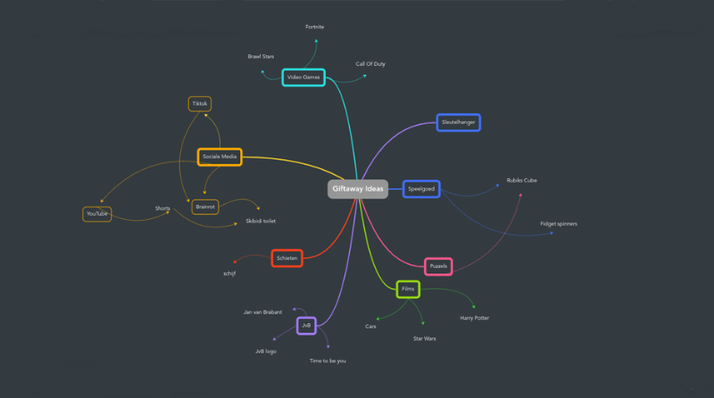
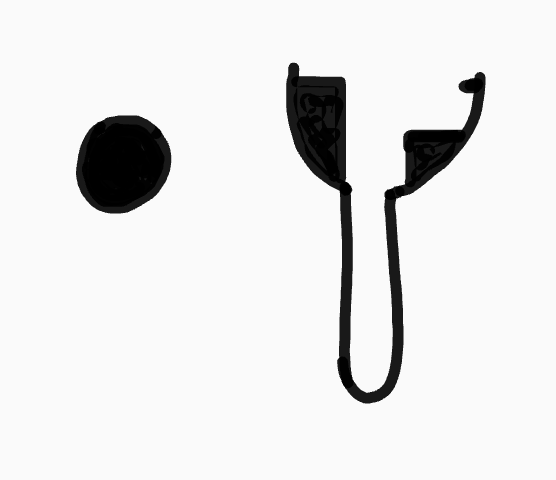
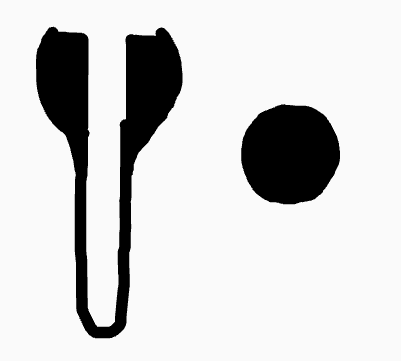
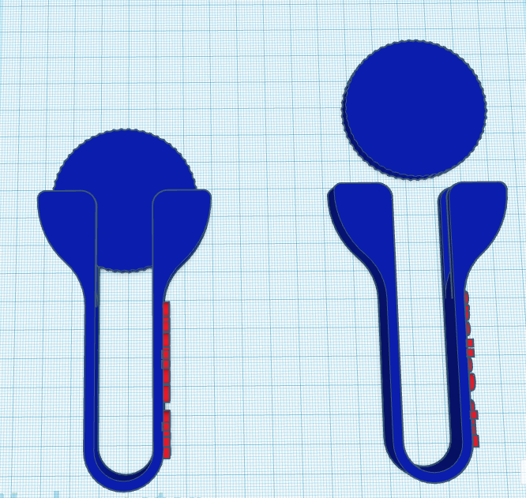
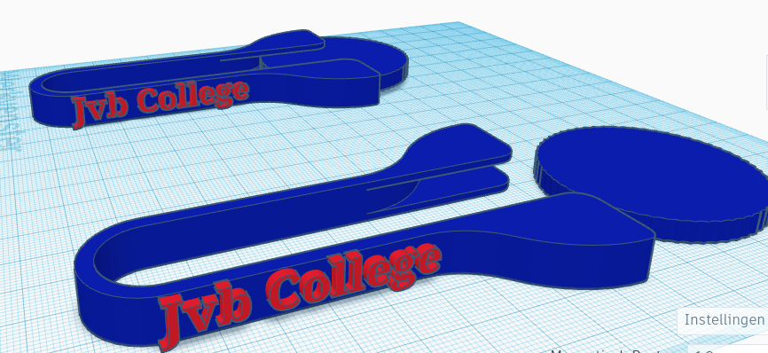

PO2: Giveaway Design
Marktonderzoek
Voor het marktonderzoek ben ik naar pinterest gegaan om daar wat ideeën te krijgen. Nadat ik en mijn vrienden wat plaatjes hadden uitgekozen, hadden we alle ideen en plaatjes op 1 bord gezet. Hier is de link tot het bord: https://pin.it/4HehVq1uS (kopier de link en plak het in een nieuw tabblad als de link niet werkt)
Brainstormen
Bij het Brainstormen heb ik mindmeister gebruikt, en heb ik die ook samen met een klasgenoot gemaakt. Ik vond mindmeister een goed idee om te gebruiken aangezien het heel makkelijk is om daarin een mindmap te maken. Zie hieronder mijn mindmap:
Schetsen
Voor het schetsen van mijn eindproduct heb ik gewoon chrome canvas gebruikt. Ik wou graag een ander programma gebruiken maar dat lukte om een rare manier niet, dus heb ik chrome canvas gebruikt en dat ging ook prima. Ik ben voor dit gegaan omdat ik dit mijn beste idee was en ik het een leuk ding vind. Als ik dan kijk naar wat de kinderen uit groep 7 en 8 leuk vinden denk ik dat dit wel een leuk iets is. Het enige wat iets minder is is dat het een schijfje nodig heeft en dat misschien een probleem kan zijn voor het uitdelen, dus heb ik bedacht dat je het misschien ook in een zakje kon stoppen. Hier is de schets:
1ste schets
Eindschets
Eindproducht/digitale ontwerp
Aangezien ik Sketchup niet zo heel fijn vond, heb ik thinkercad gebruikt. Ik heb een lange tijd gezeten en uit zitten vogelen hoe ik het nou uiteindlijk wou laten worden. Na al een paar keer mislukte ontwerpen had ik het eindelijk goed gedaan. Ik vind dat het redelijk goed is gelukt en ik ben er ook wel een beetje trots op want ik maak niet zo heel vaak een 3D ontwerp. Ik heb ook op de zijkant JvB College neer gezet zodat het echt een aandenken word aan onze school. Op het schijfje wat er bij hoort kun je eventueel ook nog het JvB logo op zetten maar dat is een optie. Hier is mijn ontwerp:
 Klik hier om het 3D giveaway ontwerp bestand te downloaden: 3D giveaway ontwerp
Reflectie
Ik vond het heel leuk om een 3D ontwerp te maken en ik ben er ook erg blij mee. Ik vond ook dat bijna alles wel gewoon goed ging, maar er waren ook dingetjes waar ik minder blij mee was zoals dat ik niet fusion 360 kon gebruiken om de schets te maken vanwege een probleem. Voor de rest was het wel goed gegaan. De dingen die ik bij deze opdracht heb geleerd zijn 3D ontwerpen maken, bij de rest wist ik al hoe dat moest en heb ik daarbij niks extra's geleerd. Ik heb niet echt iets wat ik mee zou nemen in de volgende opdracht dat ik bij deze opdracht geleerd heb, heel misschien een 3D ontwerp maken maar voor de rest niks. Over het algemeen vond ik deze opdracht in totaal een best leuke opdracht om te doen.